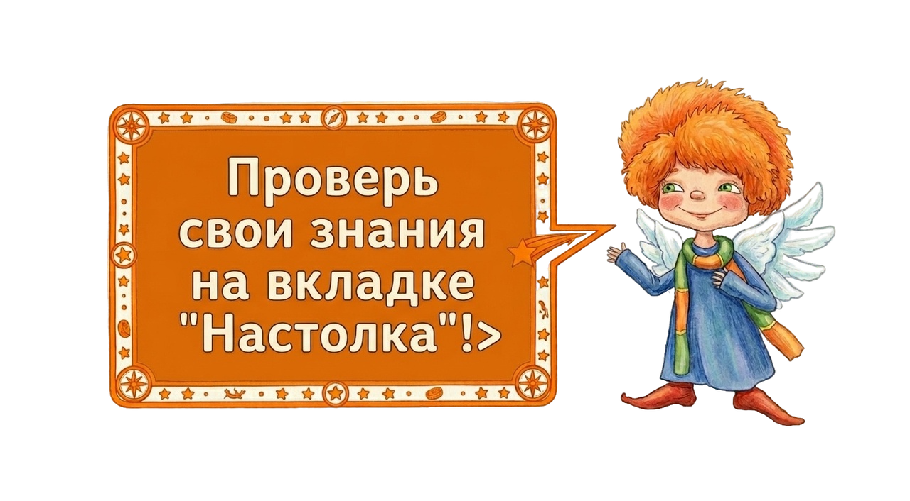

Данный проект создан на
основе книги Назаровой Е.В. "Волшебное превращение..." для профориентации детской аудитории. Разработан
командой "Техновижн" специально для АО "Уралэлектромедь" по конкурсному направлению "Мир профессий" в рамках межрегионального конкурса проектов "Инженериада".
